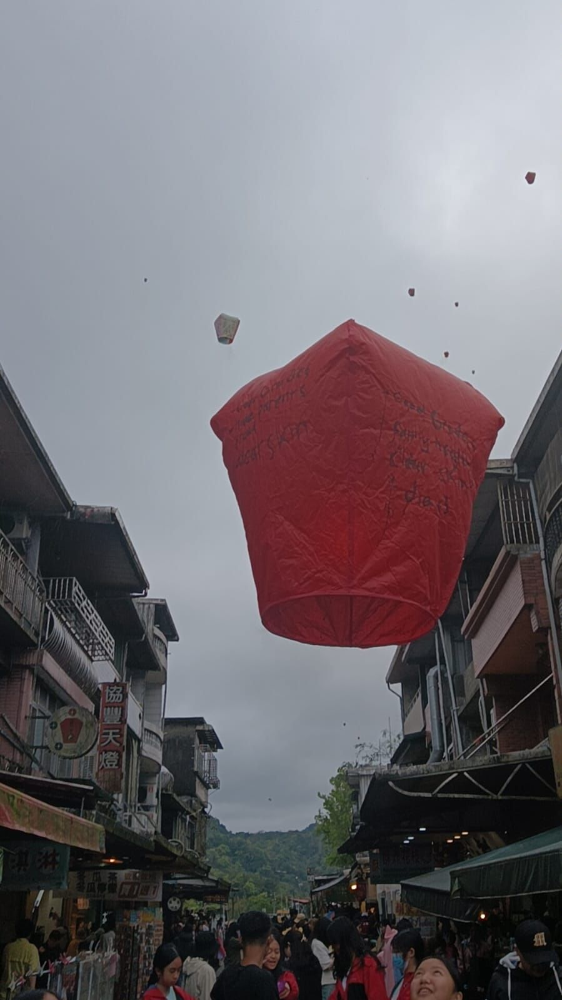
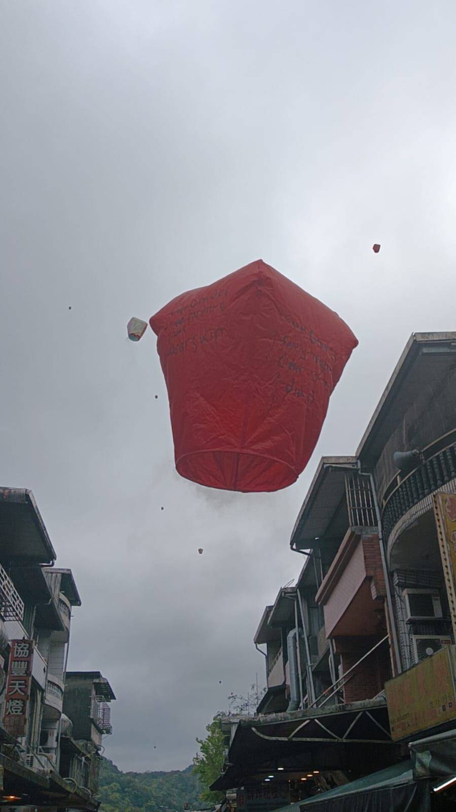

Angela Benedette Pranoto 8A / 02
Pertanyaan LKS Agama diambil dari kunjungan ke Shifen Old Street. 1. Kondisi Sebagian besar bangunan Sebagian besar bangunan di Shifen Old Street terlihat tua dan klasik. Namun, bangunannya etap mempertahankan arsitektur tradisional Tionghoa. 2. Cara masyarakat merawat masa lalu Masyarakat menjaga tradisi dengan tetap menjalankan ritual melepas lampion ke langit, melestarikan toko-toko tua serta menjaga kebersihan an keaslian bangunan dan jalanan. 3. Tata kota area destinasi Jalan utama Shifen Oldstreet terietak di rel kereta aktif, yang dikelilingi toko - toko yang menjual suvenir dan makanan khas Taiwan. 4. Interaksi antar-generasi Nenek moyang menurunkan tradisi melepas lampion dari generasi ke generasi, agar Tradisi ini tetap dilestarikan. 5. Kepercayaan / keyakinan masyarakat Melepas lampion dipercayai membawa keberuntungan dan harapan baik, sesuai dengan tradisi masyarakat Tionghoa. | |
|  |  |